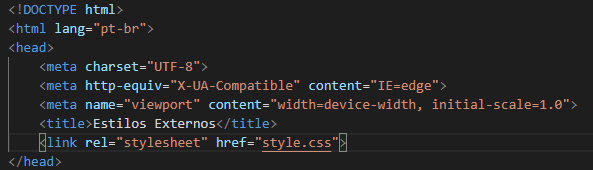

A liguagem CSS é focado no estilo do site, como cores, fonte, tamanho da letras, dentre outras coisas.
No estilo inline, nós utilizamos as tags da CSS dentro dos paramentros do HTML, essa forma de utilizar o CSS não é aconselhavel, pois deixa o código uma bagunça, pois fica cheio de informações, e caso você precise fazer alguma alteração você terá que repetir o mesmo processo todas as vezes em cada tag, tornando improdutiva a utilização da linguagem CSS desta forma. Abaixo mostra como o código fica uma bagunça.
O código fica cheio de informações e caso seja necessarios trocar as cores do "h2" por exemplo, você iria precisar trocar a de cada um manualmente. Por isso, não utilize o CSS Inline.
Já desta forma as coisas já ficam bem diferentes, pois nós não utilizamos o CSS dentro dos parametros do HTML, mas ao invez disso, usamos a tag "style" dentro de "head", que a cabeça do código. Assim, tudo que colocamos nele fica é automaticamente aplicado em cada tag, na imagem abaixo irá mostrar como fica:

Como pode-se ver, nós colocamos dentro da tag "style" o formato e cores que queremos em cada tag e assim é aplicado automaticamente, e caso queira trocar a cor, a mudança da cor será aplicada automaticamente. Está é uma forma bem mais pratica de usar o CSS.
Mas ainda existe uma melhor e que ocupa menos espaço.
Nesse estilo o código fica mais limpo, isso porque só é preciso colocar a tag "link:css" no "head" do código, após ter feito isso, basta clicar em cima dele e irá criar um novo arquivo, mas esse arquivo é só de estilo CSS. Na imagem abaixo iremos vermos como fica a tag dentro de "head" e também iremos ver o arquivo que é criado para o style css.
Perceba que na 1º linha foi colocado "@charset "UTF-8", isso é uma REGRA, ela serve para entender as pontuações e sinais, mais pra frente será explicado o conceito das regras.
Vale lembrar que caso você queira mudar o formato especifico de uma tag, basta você utilizar o estilo inline naquela tag.
Outro detalhe importante é que pode colocar mais de um "link:css" no código.